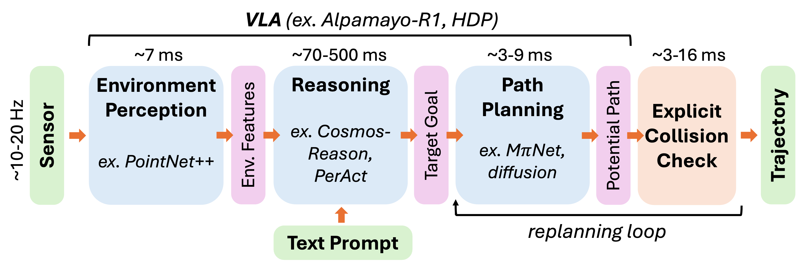
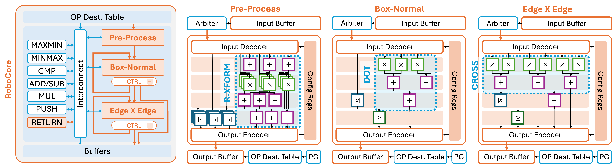
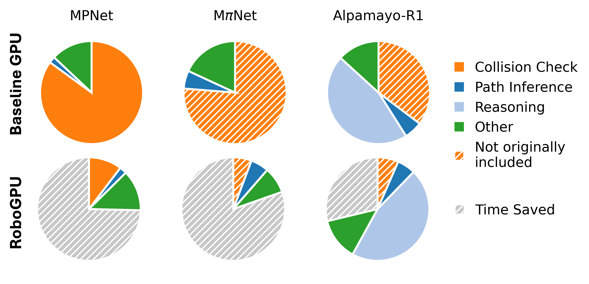
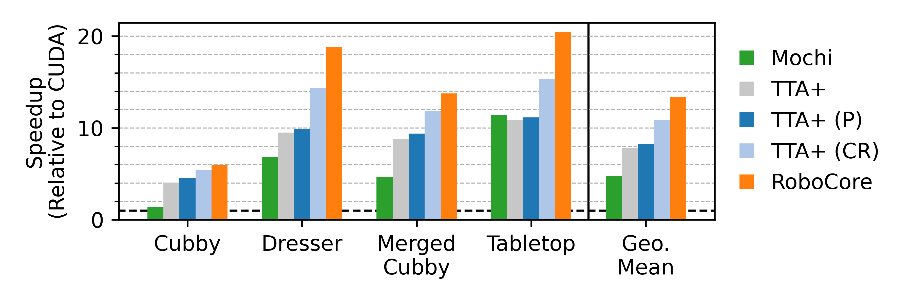

Autonomous robots are anticipated to be deployed soon in domains ranging from transportation to health care and home assistance. Enabling autonomous robotics requires a computation platform flexible enough to execute a diverse and evolving collection of workloads while meeting real-time requirements. We believe a GPU-like architecture will be a key component of such platforms. Recent GPUs combine a flexible parallel processing fabric augmented with efficient support for important application domains via embedded accelerators (e.g., Tensor Cores), and a GPU-like architecture has reportedly been adopted for the Tesla AI5 accelerator. While current GPUs are effective at supporting emerging neural motion planners, we find that collision detection is crucial for evaluating their proposed trajectories and that this step appears to require dedicated acceleration to operate in real-time.
In this work, we propose RoboCore, an accelerator block embedded within a robotics-focused GPU (RoboGPU) architecture. We explore and compare architectural modifications to address the gaps of existing ray tracing accelerators (RTAs) for robotics and find that RoboCore computes collision queries 2.8x faster than RTA implementations using 48% less energy with 2% more area than RTAs. RoboCore is 13.3x faster than a CUDA baseline, and achieves 3.4x end-to-end speedup on a neural motion planner and 1.1x speedup on Monte Carlo Localization compared to a baseline GPU. This demonstrates that a hybrid approach of embedded specialization within a flexible general-purpose GPU architecture is suitable for supporting advancements in robotics.
Modern robots commonly rely on a vision-language-action model to plan actions. These neural planners have several attractive properties over classical motion planning approaches. They can generalize across different environments, plan quickly, achieve high task success rates, and re-plan in real time as the situation changes. However, neural planners typically do not verify their trajectories to detect possible collisions. Although neural planners learn to avoid obstacles from their training data, learned avoidance is not perfect and up to 18% of these so-called “successfully” generated trajectories can actually be in collision with environment obstacles. As a result, neural planners need to be coupled with an explicit collision check.

Our collision detection algorithm relies on the separating axis theorem. There are 15 candidate axes to test for a 3D collision. These tests involve repeated arithmetic operations and comparisons, making them a promising target for specialized hardware. At the same time, the algorithm introduces early exit opportunities when a separating axis is found. RoboCore organizes these computations into stages and completes the collision check serially for each axis, exiting when a separating axis is found. Each stage operates as its own individual unit, with a 4-stage pipelined data path to execute the necessary arithmetic computation. A controller tracks the number of axes completed with counters and routes queries accordingly. We design these units to fit into the architecture of a generalized tree traversal accelerator, TTA+. This combines our accelerated collision detection with a programmable interface that potentially supports other robotics kernels.

For our main results, we consider three neural motion planners: MPNet, MPiNet, and Alpamayo-R1. Since MPiNet and Alpamayo-R1 both do not include explicit collision detection by default, we append the operation. Using our proposed RoboCore architecture, we can significantly accelerate the collision detection latency. For certain operations such as point cloud processing in MPiNet, we can further reduce execution latency. As a result, RoboGPU can execute an end-to-end neural motion planner faster even with the additional collision check.

RoboGPU is 13.3x faster than CUDA running on a baseline GPU and 2.8x faster than Mochi running on a ray tracing accelerator for collision detection.
